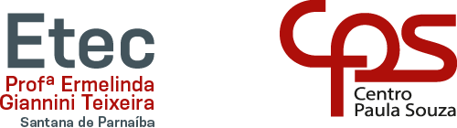

A Etec Profª Ermelinda Giannini Teixeira, localizada em Santana de Parnaíba, oferece diversas opções de cursos técnicos e de Ensino Médio integrado ao técnico (M-Tec).Abaixo estão os cursos oferecidos de acordo com a modalidade:
Cursos Técnicos (Modalidade Presencial)Estes cursos são focados na formação profissional e geralmente ocorrem no período noturno:
Administração: Focado em gestão de processos e negócios (possui opção com até 20% de carga horária online).
Desenvolvimento de Sistemas: Ensina a projetar e analisar sistemas computacionais (possui opção com até 20% de carga horária online)
Recursos Humanos: Capacita para a gestão de pessoas e processos de departamento pessoal.
Ensino Médio Integrado ao Técnico (M-Tec)Nesta modalidade, o aluno cursa o Ensino Médio e o Técnico simultaneamente na mesma unidade:
M-Tec em AdministraçãoM-Tec em Desenvolvimento de SistemasM-Tec em MarketingM-Tec em Programação de Jogos DigitaisInformações ÚteisLocalização:
Rua Fernão Dias Falcão, 196 - Centro, Santana de Parnaíba - SP.Inscrições: O ingresso ocorre via Vestibulinho Etec. Para o próximo semestre ou ano letivo, as inscrições devem ser feitas diretamente no site oficial vestibulinho.etec.sp.gov.br.Contato: Pode ser feito pelo telefone (11) 4154-7142

VOLTAR